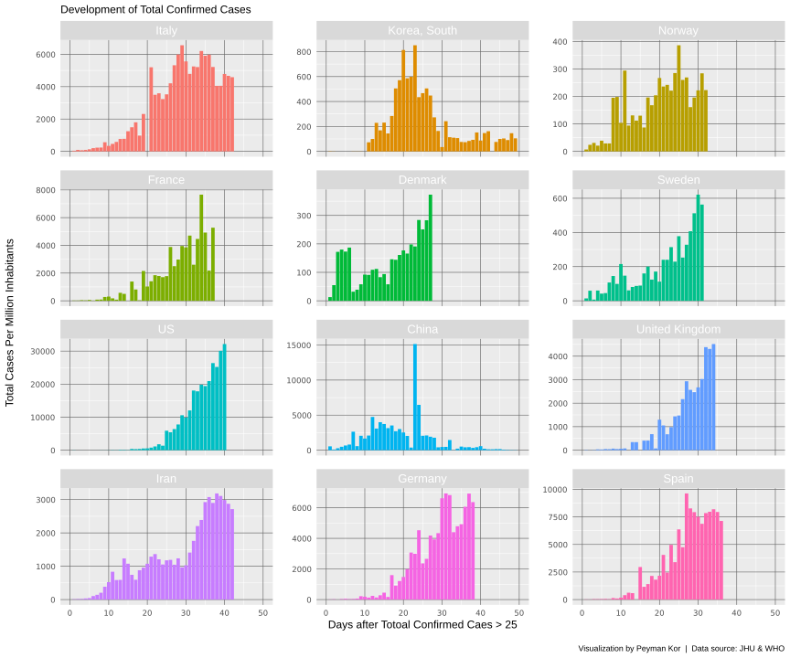
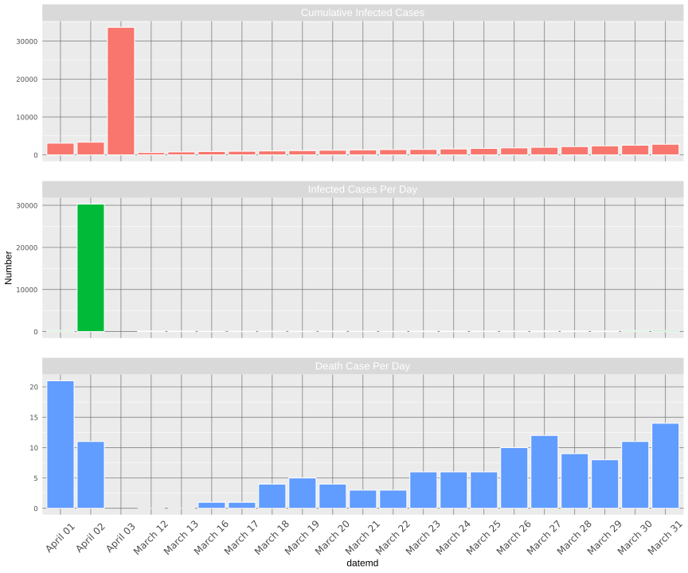
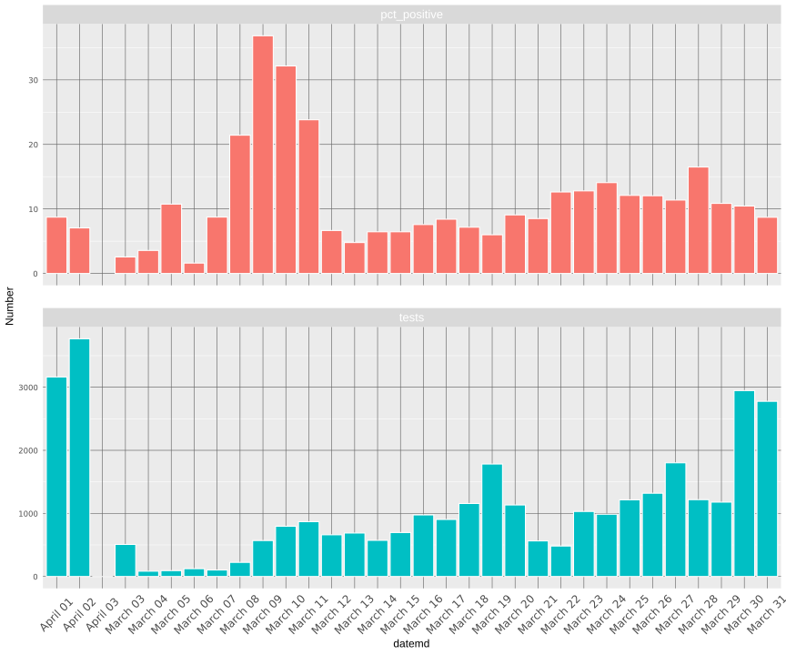
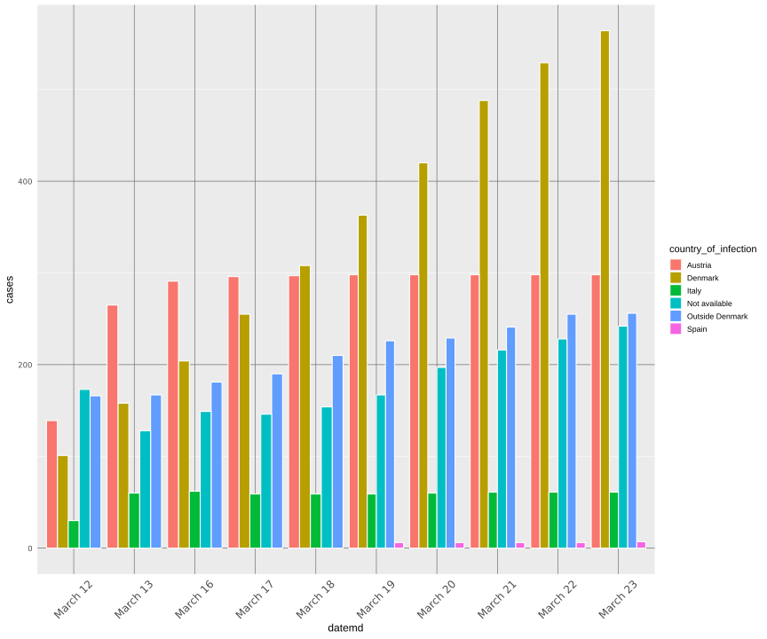
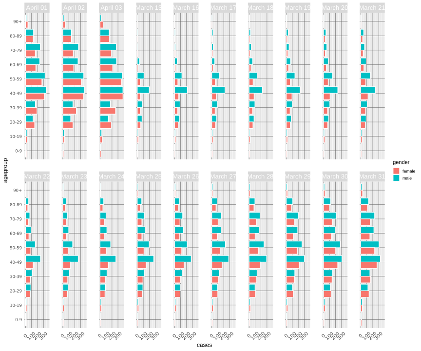

Here, we use the the Coronavirus package developed and maintained with Rami Krispin at this link:
https://github.com/RamiKrispin/coronavirus
In addition, the Tidyverse package also was needed to manipulate and visualize the data.
#devtools::install_github("RamiKrispin/coronavirus")
library(coronavirus)
data("coronavirus")
library(tidyverse)Here, the dplyr was used to select the following countries: + Italy + South Korea + France + Denmark + Norway + Sweden
Then, we calculated the sum of the whole confirmed cases until the given time. In addition, the “row_number” was added to find the days after the Corona Cases has been reached above 25 cases.
eu_cases <- coronavirus %>%
group_by(Country.Region, date, type) %>%
filter(type== "confirmed") %>%
summarise(Cases=sum(cases)) %>%
filter(Country.Region== "Italy" | Country.Region== "Korea, South" | Country.Region== "France" | Country.Region== "US" | Country.Region== "Denmark" |
Country.Region== "Norway" |
Country.Region=="Sweden" | Country.Region=="China" | Country.Region=="United Kingdom"| Country.Region=="Germany" | Country.Region=="Iran" | Country.Region=="Spain" ) %>%
group_by(Country.Region, type) %>%
mutate(tot_confirmed = cumsum(Cases)) %>%
filter(type=="confirmed") %>%
filter(tot_confirmed > 25) %>%
mutate(id = row_number())
#filter(id < 29)Here, the population of the countries were found and corresponding population was added to the column “pop” in the data set.
populations <- c( 81.16, 82.79, 60.48, 51.47, 5.6, 5.36, 1386, 67, 10, 350,67,40 )
names(populations) <- c("Iran", "Germany", "Italy", "Korea, South"
,"Denmark", "Norway" ,"China", "France", "Sweden", "US", "United Kingdom", "Spain")
eu_cases$pop <- rep(0,length(eu_cases$Country.Region))
for (i in 1:length(eu_cases$Country.Region)) {
country <- as.character(eu_cases$Country.Region[i])
eu_cases$pop[i] <- populations[[country]]
} Great thanks to Cedric Scherer (cedricphilippscherer@gmail.com) for his beautiful theme!, this theme was used as the theme of the plotting in the bottom
If you are using the windows, you must install the following the fonts Poppins and Roboto Mono and then:
Here, we use the custom edit in order to plot the ggplot output in the longer format than the default.
eu_cases <- eu_cases %>% mutate(tot_confirmed_per = tot_confirmed/pop)
eu_cases$Country.Region = factor(eu_cases$Country.Region,
levels=c("Italy", "Korea, South","Norway","France" ,"Denmark"
,"Sweden", "US", "China", "United Kingdom", "Iran", "Germany","Spain"))
ggplot(eu_cases, aes(id, Cases, fill=Country.Region)) +
geom_bar(stat = "identity") +
#geom_area(alpha = 0.75) +
facet_wrap(~ Country.Region, nrow = 4, scales = "free_y") +
theme(legend.position = "none",
plot.title = element_text(size=12),
axis.title = element_text(size = 12, face = "plain"),
axis.title.x = element_text(size = 12, face = "plain"),
axis.title.y = element_text(size = 12, face = "plain"),
axis.text = element_text(family = "Roboto Mono", size = 8.5),
axis.ticks.x = element_line(colour = "transparent", size = 1),
axis.ticks.y = element_line(colour = "transparent", size = 0.3),
panel.grid.major.y = element_line(colour = "grey40", size = 0.3),
panel.grid.major.x = element_line(colour = "grey40", size = 0.3),
panel.border = element_blank(),
strip.background = element_rect(color = "transparent"),
strip.text = element_text(size = 13, colour = "white"),
panel.spacing = unit(15, "pt")) +
scale_x_continuous(limits = c(0, 50)) +
labs(x = "Days after Totoal Confirmed Caes > 25", y = "Total Cases Per Million Inhabitants\n",
title = "Development of Total Confirmed Cases",
caption = "\nVisualization by Peyman Kor | Data source: JHU & WHO")
library(httr)
library(jsonlite)
library(tidyverse)
library(lubridate)
library(readr)
library(plyr)Danish Data:
mytheme<-theme(legend.position = "none",
plot.title = element_text(size=12),
axis.title = element_text(size = 12, face = "plain"),
axis.title.x = element_text(size = 12, face = "plain"),
axis.title.y = element_text(size = 12, face = "plain"),
axis.text = element_text(family = "Roboto Mono", size = 8.5),
axis.ticks.x = element_line(colour = "transparent", size = 1),
axis.ticks.y = element_line(colour = "transparent", size = 0.3),
panel.grid.major.y = element_line(colour = "grey40", size = 0.3),
panel.grid.major.x = element_line(colour = "grey40", size = 0.3),
panel.border = element_blank(),
strip.background = element_rect(color = "transparent"),
strip.text = element_text(size = 13, colour = "white"),
panel.spacing = unit(25, "pt"))
mytheme_withlegend<-theme(plot.title = element_text(size=12),
axis.title = element_text(size = 12, face = "plain"),
axis.title.x = element_text(size = 12, face = "plain"),
axis.title.y = element_text(size = 12, face = "plain"),
axis.text = element_text(family = "Roboto Mono", size = 8.5),
axis.ticks.x = element_line(colour = "transparent", size = 1),
axis.ticks.y = element_line(colour = "transparent", size = 0.3),
panel.grid.major.y = element_line(colour = "grey40", size = 0.3),
panel.grid.major.x = element_line(colour = "grey40", size = 0.3),
panel.border = element_blank(),
strip.background = element_rect(color = "transparent"),
strip.text = element_text(size = 13, colour = "white"),
panel.spacing = unit(25, "pt"))
##########################
path <- "https://api.covid19data.dk:443/ssi_cases"
req_ssi <- GET(url=path)
response_ssi <- content(req_ssi, as = "text", encoding = "UTF-8")
###################################
######################################
pathd <- "https://api.covid19data.dk:443/ssi_deaths_ts"
req_death <- GET(url=pathd)
response_death <- content(req_death, as = "text", encoding = "UTF-8")
df_death <- fromJSON(response_death, flatten = TRUE) %>%
data.frame() %>%
mutate(date=parse_datetime(date)) %>%
mutate(datemd=as.factor(format(date, "%B %d"))) %>%
select(datemd, deaths)
######################################
df_ssi <- fromJSON(response_ssi, flatten = TRUE) %>%
data.frame() %>%
mutate(date=parse_date_time(timestamp,"Ymd HM", truncated = 4, tz="CET")) %>%
mutate(datemd=as.factor(format(date, "%B %d"))) %>%
select(datemd,cases) %>% left_join(df_death) %>%
mutate(datemd=as.factor(datemd)) %>%
mutate(Cases_Per_Day = lead(cases)-cases) %>%
pivot_longer(-c(datemd), names_to = "Type", values_to = "Number") %>%
mutate(Type=as.factor(Type))
levels(df_ssi$Type) <- c("Cumulative Infected Cases", "Infected Cases Per Day", "Death Case Per Day")
ggplot(df_ssi, aes(datemd, Number,fill=Type)) +
geom_bar(stat = 'identity', color='white') +
facet_wrap(~ Type, nrow = 3, scales = "free_y") +
#scale_x_datetime('Date',
# date_breaks = '1 day',
# date_labels = '%b %d') +
mytheme + theme(axis.text.x = element_text(size = 12, face = "plain", angle = 45, vjust = 0.5))
path <- "https://api.covid19data.dk:443/ssi_cases_ts"
req_ts <- GET(url=path)
response_ts <- content(req_ts, as = "text", encoding = "UTF-8")
df_ssi_ts <- fromJSON(response_ts, flatten = TRUE) %>%
data.frame() %>%
mutate(date=parse_datetime(test_date)) %>%
mutate(datemd=as.factor(format(date, "%B %d"))) %>%
select(datemd,tests,pct_positive) %>%
pivot_longer(-datemd, names_to = "Type", values_to = "Number")
df_ssi_ts <- df_ssi_ts[-nrow(df_ssi_ts),]
ggplot(df_ssi_ts, aes(x= datemd, fill=Type)) +
geom_bar(aes(y=Number),stat = 'identity', color='white') +
facet_wrap(~ Type, nrow = 2, scales = "free_y") +
mytheme +
theme(axis.text.x = element_text(size = 12, face = "plain", angle = 45, vjust = 0.5))
path <- "https://api.covid19data.dk:443/ssi_countries"
req_cou <- GET(url=path)
response_cou <- content(req_cou, as = "text", encoding = "UTF-8")
df_cou <- fromJSON(response_cou, flatten = TRUE) %>%
data.frame() %>%
mutate(date=parse_date_time(timestamp,"Ymd HM", truncated = 4, tz="CET")) %>%
mutate(datemd=as.factor(format(date, "%B %d"))) %>%
filter(cases>5)
ggplot(df_cou, aes(datemd, cases, fill=country_of_infection)) +
geom_bar(stat = 'identity', position = position_dodge(), binwidth = 5, color='white') +
mytheme_withlegend + theme(axis.text.x = element_text(size = 12, face = "plain", angle = 45, vjust = 0.5))
#####################################
path <- "https://api.covid19data.dk:443/ssi_demo_cases"
req_demo <- GET(url=path)
response_demo <- content(req_demo, as = "text", encoding = "UTF-8")
#######################################
#######################################################
df_dem <- fromJSON(response_demo, flatten = TRUE) %>%
data.frame() %>%
mutate(date=parse_date_time(timestamp,"Ymd HM", truncated = 4, tz="CET")) %>%
mutate(datemd=as.factor(format(date, "%B %d")))
######################################################
####################################################################
ggplot(df_dem, aes(x = agegroup, y = cases, fill = gender)) +
geom_bar(subset = .(Gender == "Female"), stat = "identity", position = position_dodge(), color='white') +
geom_bar(subset = .(Gender == "Male"), stat = "identity", position = position_dodge(), color='white') +
facet_wrap(~ datemd, nrow=2) +
scale_y_continuous(breaks = seq(-300, 300, 100)) +
coord_flip() +
mytheme_withlegend +
theme(axis.text.x = element_text(size = 10, face = "plain", angle = 45, vjust = 0.5))
##############################################################